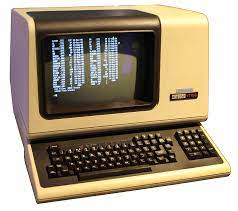
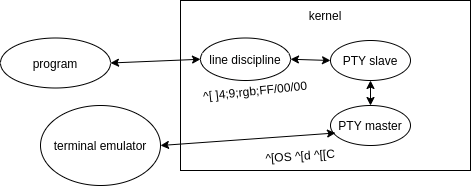
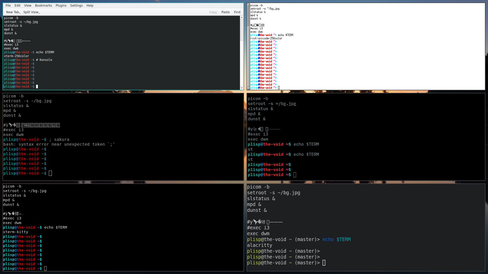

Terminals ARE NOT GUI
Tagged as terminals
Written on 2022-01-16 16:02:09
Unless you're dealing solely with ascii, which is typically a naive assumption in our Unicode world and especially in the realm of text editing widgets, terminal emulators should be avoided for the dusty VT100 relics they are.
Not only is input handling unbelievably botched, consistent text rendering is impossible across terminals.
To understand the unfixable brokenness we must look inside the terminal:

The original terminals were physical devices capable of displaying a simple grid of characters, and so the textual terminal interfaces developed mapped elegantly to the displays of the time (much prior to Unicode). However when true GUI caught on, this design meant terminal drivers needed to be developed with the sole purpose of emulating a physical terminal to support shells and other programs predating graphical environments, which relied on line buffering and catching special characters such as ctrl+c. A UNIXy kernel typically exposes this functionality through pseudoterminals (PTYs), where bytes written between the graphical terminal emulator and program can be first mediated by the OS driver.
Ironically "terminal user interfaces" of course immediately disable the kernel's
line buffering and control character processing on startup to regain full control
over user input - you may notice ctrl+c doesn't cause the vim editor to
terminate as batch programs do.

Upon launching a shell program, its standard input/output are connected to the terminal emulator through the kernel via a pty, allowing the madness to begin.
To see what I mean, run script to start a recursive shell session where input
will be logged to a file called typescript in the current working directory.
Launch any 'graphical' terminal program, exit and ctrl+d to return to your original
shell. Opening typescript with a reliable text editor you see...
an absolutely incomprehensible mess of seemingly random characters.
You may have heard of these strings as terminal escape codes, which precisely reflected my urge after developing a TUI library. These unseen sequences are copied between the terminal emulator and TUI program through the pty, mediating both user input reporting and 'graphical' commands like 'clear the screen' or 'set the drawing color to flashing red'.
Where are these sequences defined? Prepare yourself and run infocmp in a shell.
xterm|xterm terminal emulator (X Window System),
am, bce, km, mc5i, mir, msgr, npc, xenl,
colors#8, cols#80, it#8, lines#24, pairs#64,
acsc=``aaffggiijjkkllmmnnooppqqrrssttuuvvwwxxyyzz{{||}}~~,
bel=^G, blink=\E[5m, bold=\E[1m, cbt=\E[Z, civis=\E[?25l,
clear=\E[H\E[2J, cnorm=\E[?12l\E[?25h, cr=\r,
csr=\E[%i%p1%d;%p2%dr, cub=\E[%p1%dD, cub1=^H,
cud=\E[%p1%dB, cud1=\n, cuf=\E[%p1%dC, cuf1=\E[C,
cup=\E[%i%p1%d;%p2%dH, cuu=\E[%p1%dA, cuu1=\E[A,
cvvis=\E[?12;25h, dch=\E[%p1%dP, dch1=\E[P, dim=\E[2m,
......You might notice some of these sequences were the same codes from script earlier.
Also note that these sequences are specific to a certain terminal emulator type,
in this case xterm. There's a whole directory somewhere filled with repeated
descriptions for dozens of terminal types, most of which you will certainly never need.
In fact, many terminals have outdated terminfo descriptions or lie that
TERM=xterm-256color, which makes writing a library wrapper
uniquely painful.
Fortunately you've probably got a fun terminal library wrapper so you don't need to worry right?
Well... not quite. Half the keys when modified, and especially mouse events will simply not be reported by the terminal emulator due to legacy encoding issues. On top of that displaying things is generally still your problem, and the only graphical primitive available to you is sending text through what's essentially a pipe. Because you're copying text in and out of the kernel, as well as waiting on slow terminals to parse color control sequences, it's common to observe screen tearing if your library coughs and ncurses fails to optimize output properly. For those morbidly curious, this involves insanity such as batch-drawing things with the same color to avoid outputting long color-changing sequences and minimising movement of the terminal cursor - the only location where text can be drawn on the screen.
But there's more!

The concept of a character's display width is not well defined with terminals, accustomed to a grid of monospace ascii characters, and so no terminal emulator in existence can render wide and combining characters consistently though alacritty seems to come close. This reflects another lack of standardization which means no TUI can draw emojis in a consistent way.
deep breath and conclusion
While the shell is handy for opaque textual command pipelines, programs needing real user interaction should be implemented in something sane like SDL.
Unless otherwise credited all material  by plisp
by plisp